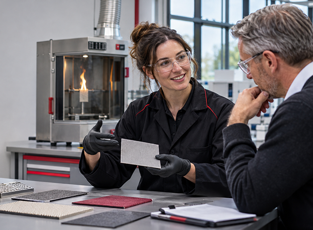

Turnaround depends on the test and sample requirements. Typical turnaround is 24–48 hours for selected tests.

QUICK ANSWERS
Before you send a sample.
Here are answers to common questions about scoping a test, preparing samples and working with Mix14.
FREQUENTLY ASKED QUESTIONS
What would you like to know?
Send the required standard, material or component details and the question you need answered. Mix14 can discuss the relevant method, capability and sample requirements with you.
Include the required standard and revision, material or sample details, quantity and any target dates if known.
Yes. In-house witnessing is available by arrangement.
Yes. Tests are video recorded and video data is supplied at no extra charge.
Our team can review the test findings with you and discuss practical next steps for material selection or development.
Yes. Mix14 is an independent aerospace test house with practical R&D support for material and process development.
Use the Talk to an engineer enquiry form or email gary@mix14.co.uk with your test requirement and sample details.
Still have a question?
Tell us what you are trying to test or resolve.